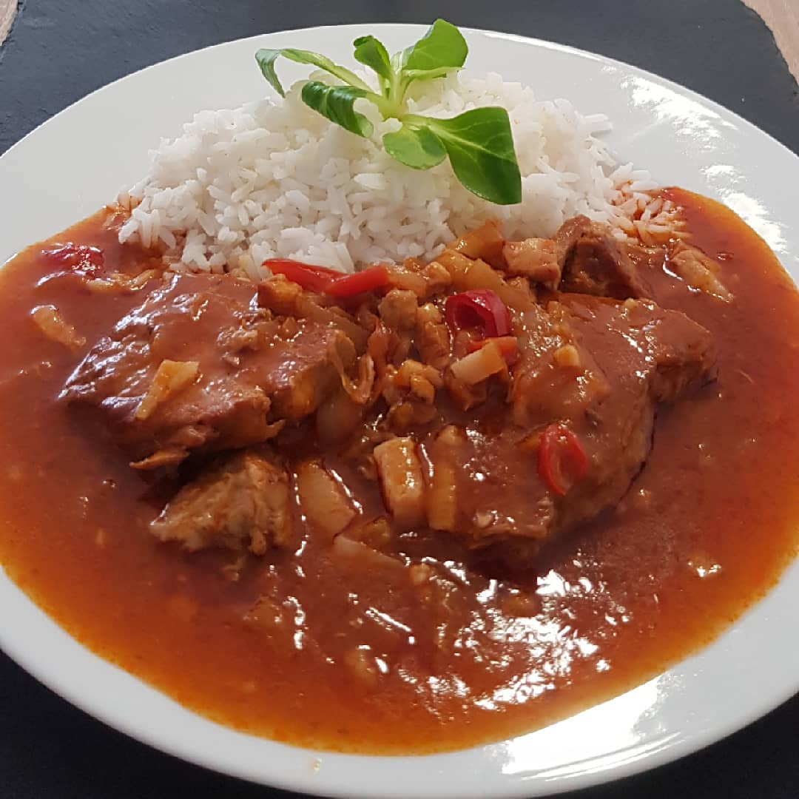

Omáčky podľa @martasvoky — Normy Jedál
Nevím proč, ale dnes jsem dostal chuť na poctivou cikánskou omáčku s rýží. Snad kvůli průseru ve ⚽️ mě tu nebudete lynčovat za rasistické jídlo 😁😁.
RECEPT NA PEČENI V CIKÁNSKÉ OMÁČCE:
Hovězí maso zadní /jde použít i vepřovou kotletu / zlehka naklepeme, osolíme a opepříme. Maso opečeme na sádle / výsledná omáčka je pak chutnější / po všech stranách vyjmeme a přidáme cibuli, špek na jemné nudličky a přidáme mletou papriku. Podlijeme vývarem/vodou, přidáme rajčatový protlak a bobkový list, pečeme pod pokličkou do změknutí. Maso dle potřeby podléváme vývarem nebo vodou. Nakonec přidáme na proužky nakrájenou barevnou papriku.
Co na to?
- 500 g maso / vepřová kotleta nebo hovězí zadní /
- sůl, pepř, bobkový list
- sádlo
- plechovka rajčat nebo protlaku
- cca 59 g špeku
- větší cibule
- barevná paprika /žlutá, červená.. jak se komu líbí 😊/
- vývar nebo voda
- jako příloha rýže /jasmínová, basmati.. /, hranolky, vařený nebo pečený brambor.
DOBROU CHUŤ 😋
#jidla #food #ceskajidla #klukvkuchyni #klukvari #czechfood #jidlojakovrestauaci #obed #homemadefood #martasvkuchyni #varimeslaskou #vareni #obed #recepty #lunchtime #lunchtime #lunch #omacky #obedovemenu #foodporno #food #plnytalir #inspirace